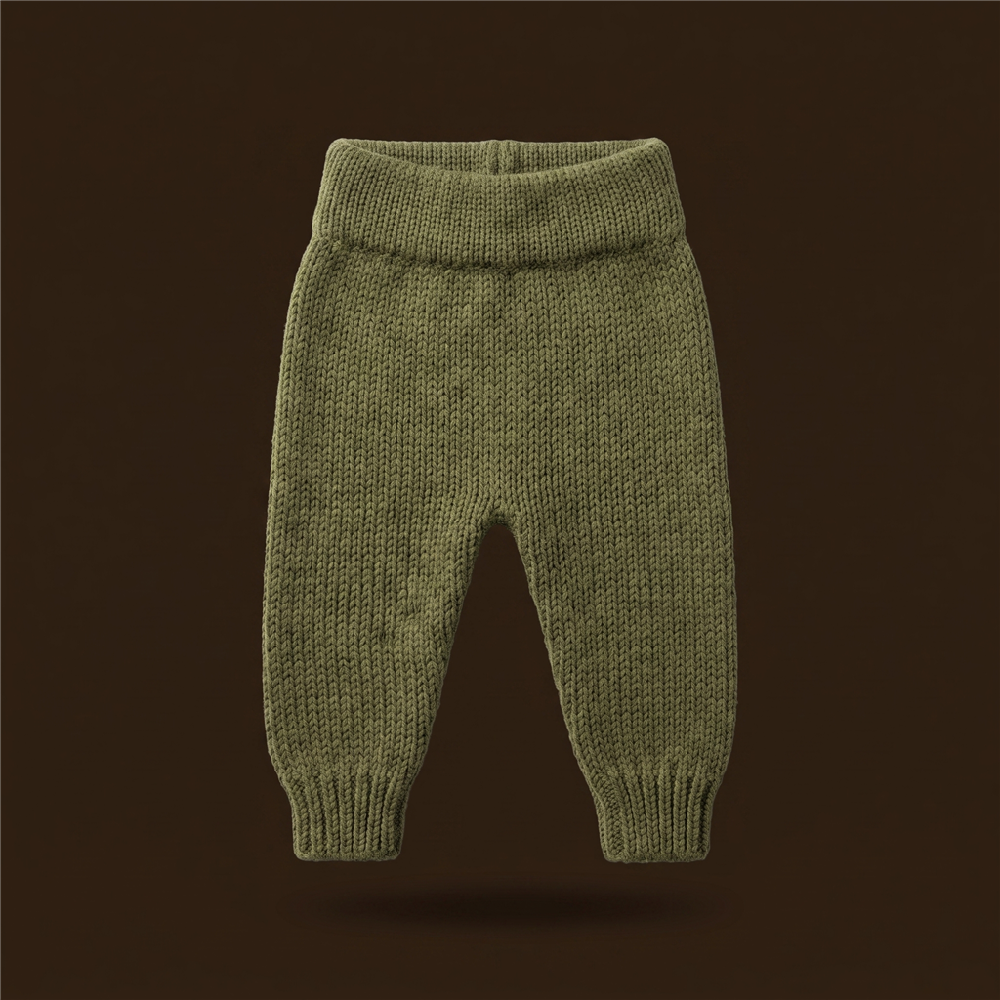
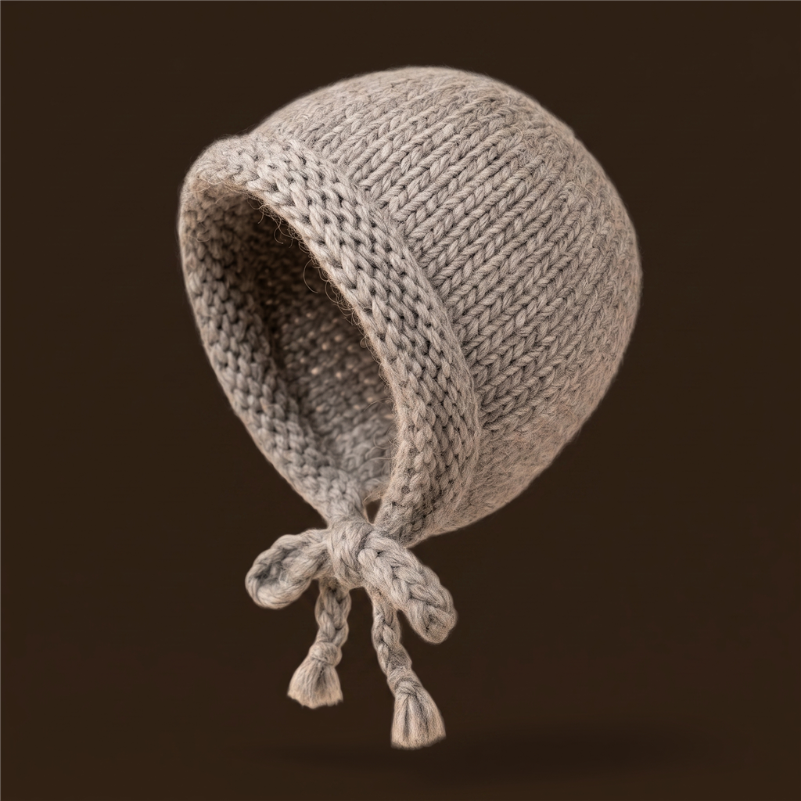
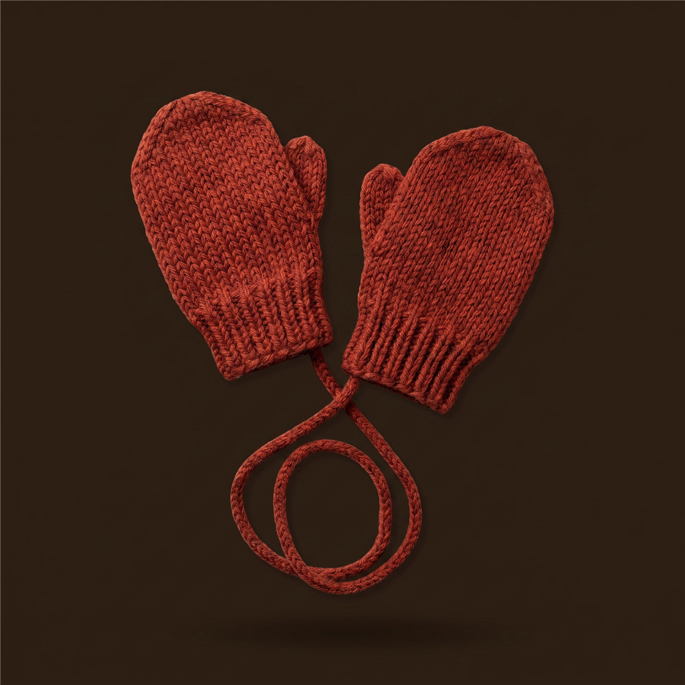

BABYORA
4°
Føles som 1° · Lett yr
Trondheim · Utenfor vogn
Juster
Dagens antrekk
5 lag i rekkefølge · 2 tilbehør
Innerst
1
Langermet ullbody
Fuktavvisende innerlag
Bytt
2
Ullsokker
Varme til føttene
Bytt
Mellomlag
3
Ullgenser
Isolerende lag
Bytt
4

Ullbukse
Isolerende lag
Bytt
Ytterst
5
Regndress
Vind- og vanntett
Bytt
Tilbehør

Lue med ull
Beskytter hodet
Bytt

Votter
Beskytter hendene
Bytt
Kle på, steg for steg
Hvorfor akkurat dette?
Hjem
Planlegg
Familie